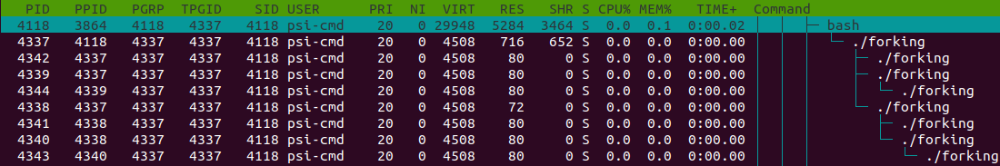

拓展阅读¶
本文目前尚未完稿，存在诸多未尽章节且未经审阅，不是正式版本。
进程组织结构¶
进程父子关系¶
Fork 是类 UNIX 中创建进程的基本方法：将当前的进程完整复制一份。新进程和旧进程唯一的区别是 fork() 的返回值不同。程序员可以根据其返回值为新旧进程设置不同的逻辑。
除了最开始的 0 号进程外，绝大多数情况下其他进程是由另一个进程通过 fork 产生的。这里产生进程的一方为父进程，被产生的是子进程。在 Linux 中，父进程可以等待子进程，接收子进程退出信号以及返回值。
孤儿进程 (orphan) 和僵尸进程 (zombie)
父子关系引出了两种特殊的运行情况——父进程先退出，它的子进程成为孤儿进程 (orphan)；子进程先退出，而父进程未作出回应 (wait)，子进程则变为僵尸进程 (zombie)。
孤儿进程（即留下的子进程）由操作系统回收，交给 init「领养」。
僵尸进程的进程资源大部分已释放，但占用一个 PID，并保存返回值。系统中大量僵尸进程的存在将导致无法创建进程。
我们可以使用 htop 查看进程的父进程等信息。按 F2，随后可以自主选择进程的属性列在面板上，以 Parent PID 为例 (PPID)，点击 colomns，点击 PPID，注意到下方提示按 F5 可以添加到左侧，再依照下方提示调整顺序。同理可以顺便在 PPID 后顺序添加 PGRP，TTY_NR，TPGID，SESSION 等列以便观察下面的实验结果。

如果 F10 被终端程序占用了，可以尝试用鼠标点击选项，或者修改终端程序的设置。例如，Xfce 默认的终端程序可以在 设置 => 高级 中取消对 F10 的占用。
进程组¶
进程组大体上是执行同一工作的进程形成的一个团体，通常是由于父进程 fork 出子进程后子进程继承父进程的组 ID 而逐渐形成。设计进程组机制主要是为了面向协作任务，比如 Firefox 工作是网页浏览，那么其相关的进程一定属于一个进程组。进程组的出现方便了系统信号管理，后面可以看到，发给一个进程组的信号将被所有属于该组的进程接收，意义就是停止整个任务整体。
会话——前台与后台¶
而会话 (session) 可以说是面向用户的登录出现的概念。当用户从终端登录进入 shell，就会以该 shell 为会话首进程展开本次会话。一个会话中通常包含着多个进程组，分别完成不同的工作。用户退出时，这个会话会结束，但有些进程仍然以该会话标识符 (session ID) 驻留系统中继续运行。
说到会话，就必然涉及到 Linux 会话中的前后台管理机制。前台 (foreground) 与后台 (background)，本质上决定了是否需要与用户交互，对于单独的一个 shell，只能有一个前台进程（组），其余进程只能在后台默默运行，上述中若干进程组，正是前台进程组和后台进程组的概称。在稍后部分中我们将学习前后台切换的相关操作。
总结：
| 进程属性 | 意义/目的 |
|---|---|
| PID | Process ID，标识进程的唯一性。 |
| PPID | Parent PID，标识进程父子关系。 |
| PGID | Process Group ID，标识共同完成一个任务的整体。 |
| TPGID | 标识一组会话中处于前台（与用户交流）的进程（组）。 |
| SID | Session ID，标识一组会话，传统意义上标识一次登录所做的任务的集合，如果是与具体登录无关的进程，其 SID 被重置。 |
守护进程的产生¶
许多守护进程直接由命令行的 shell 经 fork 产生，这样的进程首先要脱离当前会话，否则父进程退出时子进程也会退出。创建会话的系统调用是 setsid()。然而从 shell 中 fork 出来的进程为进程组组长，不能调用 setsid 另开会话：
DESCRIPTION
setsid() creates a new session if the calling process is not a process group leader. The calling
process is the leader of the new session (i.e., its session ID is made the same as its process
ID). The calling process also becomes the process group leader of a new process group in the
session (i.e., its process group ID is made the same as its process ID).
The calling process will be the only process in the new process group and in the new session.
Initially, the new session has no controlling terminal. For details of how a session acquires a
controlling terminal, see credentials(7).
所以自身创建子进程后退出，子进程调用 setsid 脱离会话，自身成为会话组组长。此时大部分守护进程已初步形成。
实际上，如果我们使用类似 bash -c "ping localhost &" & 这样的命令就可以模拟守护进程创建的过程：首先现有 shell 创建了 bash 作为子进程，该 bash 将 ping localhost 放入后台执行。由于不是交互模式，没有前台进程 bash 将自动退出。该 bash 的后台进程甚至不需要退出 session，就可以不受 SIGHUP 的影响。未 setsid 的 ping 命令可以一直在该终端输出，可见退出 session 的意义在于放弃该 tty。
打开 htop，按 PID 顺序排列，排在前面的用户进程历来都是守护进程，它们大多数先于用户登录而启动。可以注意到，守护进程的 SID 与自身 PID 相同。
Linux 下进程查看原理¶
正文提到，ps 做为查看进程的基本命令，仅仅提供静态输出，并不能提供实时监控。但是它足够简单，可以供我们进行分析。直接阅读 ps 的源代码是最直接的方法，但是成本可能过高，更好的方法是用 strace 命令来分析 ps 运行过程中使用到的系统调用。
什么是系统调用
现代操作系统有效地隔离了进程，不允许进程越过操作系统与外界交互。操作系统提供的和外界交互的方式就是系统调用。操作系统提供的系统调用可以让进程对文件、内存、进程等的状态进行控制，从而在安全隔离进程的前提下允许程序实现丰富多彩的功能。
系统调用运行在操作系统核心，为内核与用户层提供了一种通信的方式，是各用户进程「使用」操作系统的统一接口。如果没有系统调用，用户程序就需要直接操作硬件来进行需要的操作，而这对于现代操作系统来说显然是无法接受的。
strace 命令
strace 可以追踪程序使用的系统调用，输出在屏幕上，是一个程序调试工具。此处用来追踪 ps 打开的文件。
strace 开头字母为 s 是由于该命令为 Sun™ 系统移植而来的调用追踪程序。
注意 strace 会输出到标准错误 (stderr)，需要将输出重定向到标准输出之后通过管道后才能使用 grep 等工具。关于重定向、管道等内容，可以查看第六章。
$ strace ps
...
openat(AT_FDCWD, "/proc/1/stat", O_RDONLY) = 6
read(6, "1 (systemd) S 0 1 1 0 -1 4194560"..., 1024) = 193
close(6) = 0
openat(AT_FDCWD, "/proc/1/status", O_RDONLY) = 6
read(6, "Name:\tsystemd\nUmask:\t0000\nState:"..., 1024) = 1024
read(6, "00,00000000,00000000,00000000,00"..., 1024) = 295
close(6)
...
strace 会输出很多内容，上面是其中的典型案例。
可以大致猜测，ps 通过打开 /proc/1 文件夹下的 stat 和 status 文件，获得 1 号进程的信息。我们也可以试着打开它：
$ cat /proc/1/stat # 由于用户权限不同，是否添加 sudo 会导致读取出不同内容
1 (systemd) S 0 1 1 0 -1 4194560 113722 4652720 87 2258 79 670 19018 28647 \
20 0 1 0 4 231030784 2252 18446744073709551615 1 1 0 0 0 0 671173123 4096 1260 \
0 0 0 17 0 0 0 135 0 0 0 0 0 0 0 0 0 0
$ cat /proc/1/status
Name: systemd
Umask: 0000
State: S (sleeping)
Tgid: 1
Ngid: 0
Pid: 1
PPid: 0
TracerPid: 0
Uid: 0 0 0 0
Gid: 0 0 0 0
FDSize: 256
Groups:
NStgid: 1
NSpid: 1
NSpgid: 1
（以下内容省略）
也许第一个文件不是那么好看，但第二个文件就很直白了。至此可以得出结论，根目录下 /proc 文件夹储存进程信息，而 htop 等命令通过对该文件夹下的文件进行自动读取来监视进程。实际上，/proc 是一个虚拟的文件系统，存在于内存中，反映着系统的运行状态。
SysRq: 进行紧急的系统维护操作¶
你可能会注意到，你的键盘上好像有一个从未使用过的键：SysRq。其实它在 Linux 上可以对内核进行一些操作，尤其是在紧急的情况下（例如，界面卡死），可以用来关闭进程、干净地（在不损坏文件系统的情况下）重启系统等操作。
执行 cat /proc/sys/kernel/sysrq 可以查看这个功能是否启用，如果是 1 的话，就可以使用 SysRq 键了，否则需要 root 用户执行 echo 1 > /proc/sys/kernel/sysrq 以启用所有 SysRq 功能。按住 Alt + SysRq，再按下其他特定的按键，就可以执行特定的功能。
一个口诀是 "BUSIER"，反过来就是 "REISUB"，是一套可以（尽可能在）在操作界面无响应的时候干净地重启系统的按键。按住 Alt + SysRq 后依次按下这六个键即可。
- R: 从 X 桌面环境夺回键盘的控制权。
- E: 向除了 init (PID = 1) 以外的进程发送 SIGTERM 信号，要求它们干净地退出。
- I: 向除了 init 以外的进程发送 SIGKILL 信号，强制退出。
- S: 从内存同步文件修改到文件系统。
- U: 重新挂载所有的文件系统为只读状态。
- B: 立刻重启系统。
关于 fork()¶
通过以下实验，我们可以尝试使用 fork 系统调用体验建立父子进程关系。
程序文件 forking.c：
#include <stdio.h>
#include <unistd.h> // Unix standard header，提供 POSIX 标准 API
int main() {
for (int i = 0; i < 3; i++)
{
int pid = fork(); // fork 系统调用，全面复制父进程所有信息。
if (pid == 0) {
// 子进程返回 pid=0。
printf("I'm child, forked in %d turn\n", i);
} else if (pid < 0) {
// fork 失败，pid 为负值。
printf("%d turn error\n", i);
} else {
// 父进程返回子进程 pid。
printf("I'm father of %d turn, child PID = %d\n", i, pid);
}
sleep(3);
}
sleep(1000);
return 0;
}
随后，在文件所在目录下打开 shell，运行 gcc forking.c -o forking && ./forking，就可以在另一终端打开 htop 查看成果了。

按下 T 键，界面显示的进程将转化为树状结构，直观描述了父子进程之间的关系。此处可以明显观察到树梢子进程的 PID 等于父进程的 PPID。
同时由 shell 进程创立的 forking 进程的进程组号 (PGRP) 为自己的 PID，剩余进程的 PGRP 则继承自最开始的 forking 进程，PGRP 可以通过系统调用修改为自身，从原进程组中独立出去另起门户。
接下来会看到进程 SID 一律为该进程的控制 shell 的 PID。
问题
上述实验中，输入 ./forking 后一共产生了多少个进程呢，可以不看 htop 就推算出来吗？
编程处理信号¶
你可能会注意到，有些程序对你按下 Ctrl + C 的操作会有一些独特的响应，例如 ping，如果使用 Ctrl + C 键盘中断 (SIGINT)，在程序终止之前会有一段总结；而使用 SIGTERM 不会有此效果。
这个实验中，我们使用系统调用 signal() 来重新设置进程对信号的响应函数。
程序文件 signal_handle.c：
#include <stdio.h>
#include <signal.h> // 定义了变更信号处理函数的方法以及一些信号对应的常量（如 #define SIGTERM 15）
#include <unistd.h> // sleep 函数
void sig_handler(int sig); // 设置一个处理信号的函数
int main() {
signal(SIGTERM, sig_handler); // 替换默认终止信号处理例程
// signal(SIGINT, sig_handler); // 替换键盘中断（keyboard interrupt）处理例程
// signal(SIGHUP, sig_handler); // 替换控制进程挂起信号处理例程
// signal(SIGKILL, sig_handler); // 替换……不存在的！
while (1) {
sleep(10); // do something
}
}
void sig_handler(int sig) {
printf("hi!\n"); // 在收到信号时输出
// fflush(stdout); // 如果你的输出内容不包括回车，或许需要刷新缓冲区才能看到效果。因为标准输出是按行缓冲的。
}
随后，在文件所在目录下打开 shell，运行 gcc signal_handle.c -o signal_handle && ./signal_handle，就可以在另一终端打开 htop 来试验了。
可重入性
事实上，这个程序存在一个隐含的问题：信号输入后，程序的执行流变成了 sig_handler()，在处理函数执行完成之后，原来的程序是否还能正常运行？
这就牵扯到「可重入性」(reentrant) 这个概念了。如果某个函数可以在任意时刻被中断，并且这个函数在中断返回之前又再次被中断处理程序执行而不会出现错误，那么它就是「可重入」的。信号处理函数应当可重入，以保证安全执行。不是所有的函数都是可重入的，访问 man signal-safety，可以查看到一份可重入库函数的列表。
但是很遗憾，printf() 不是可重入的：如果程序正在执行 printf() 的时候有信号输入，处理函数运行 printf() 会导致输出缓冲区的数据更新，之后回到原程序的 printf() 的时候，就有可能出现问题。
终端 (Terminal) 与控制台 (Console)¶
在上世纪六十年代，个人计算机尚未开始发展，用户使用计算机的一种常见方式就是通过终端，与远程的服务器连接交互。当时键盘和显示器连为一体，称为终端（terminal）。而主机自带的一套键盘与屏幕只能给系统管理员使用，称为控制台 (console)，用来输出启动 debug 信息（现在的 Linux 系统如果因故障而不得不进入单用户修复模式，则只有一个终端 /dev/console 开启）。
然而随着时代的发展，这种模式逐渐被家庭电脑的分布式主机取代，我们不需要，也没有多套终端了，只有显示器、键盘、鼠标。但是为了向前兼容性，我们需要假装这是一个（甚至多个）终端，所以一般发行版 /dev 目录下有 7 个终端 tty1 ~ tty7，通过 Ctrl + Alt + F1 ~ F7 切换键盘与显示器与哪个终端相对应。
再后来，随着时代发展，终端需要出现在图形界面上了，然而承载图形界面的也是终端，所以终端里的终端就需要终端模拟器来实现了。由此，出现在图形界面上的终端才叫终端模拟器。
没有图形界面时，shell 一般为控制台 (tty) 的子进程，在图形界面上 shell 建立在虚拟终端 (pty, pseudo tty) 之上。顺带一提，服务器常用的远程连接工具 ssh 的父进程也是一个 pty。
注意：终端不是 Shell，尽管它们经常被弄混淆。
参考阅读: 你真的知道什么是终端吗？